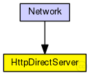

This documentation is released under the Creative Commons license
This documentation is released under the Creative Commons licenseEin HTTP-Server-Modul, das ohne Netzwerk mit einem HTTP-Client-Modul kommuniziert
The following diagram shows usage relationships between types. Unresolved types are missing from the diagram.
The following diagram shows inheritance relationships for this type. Unresolved types are missing from the diagram.
| Name | Type | Description |
|---|---|---|
| Network | network |
Das Netzwerk |
| Name | Type | Default value | Description |
|---|---|---|---|
| numBytes | int | 4000 |
Länge des HTML-Dokuments |
| Name | Direction | Size | Description |
|---|---|---|---|
| in | input | ||
| out | output |
// // Ein HTTP-Server-Modul, das ohne Netzwerk mit einem HTTP-Client-Modul kommuniziert // simple HttpDirectServer { parameters: int numBytes = default(4000); // Länge des HTML-Dokuments gates: input in; output out; }
This documentation is released under the Creative Commons license